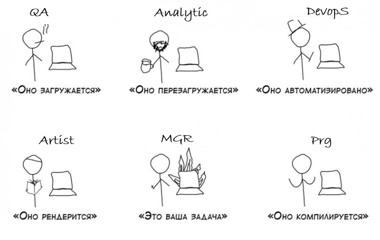

В std::move никто никуда не двигается
В undefined behavior поведение вполне себе определено, просто крашит игру
В GameObject нет ни игры ни объекта, а только баги и куча антипаттернов
Memory leak detector сам протекает
В PhysicsEngine физики столько же, сколько в сказке про Колобка
Из 8 часов работы 6 уходят на попытку собрать билд после мержа со стейблом.
В ProfileMode тормозит всё кроме профайлера
В retrospective meeting обсуждают, почему всё плохо, но оставляют как есть.
В debug билде багов меньше чем в релизном и выше фпс
Crossplatform сборка игры компилится только на одной машине, в определённом углу офиса, на одном компиляторе, в полнолуние
В LevelStreaming грузится весь мир сразу
В C++ из игрового языка только умение играть на нервах разрабов
Порефакторенный легаси код начинает мстить через неделю
В tech debt backlog долгов больше, чем фич. Но фичи делают, а долги нет
В EntityComponentSystem нет ни системы, ни сущностей ни компонентов, только хаос данных и сотни несвязанных вызовов
QA репортит баг где описано всё, кроме того, как это воспроизвести.
code review фидбек приходит, когда ты уже пушнул в релиз ветку.
«Красивая оптимизация» от тимлида обычно роняет фпс.
В MVP нет ни минимального, ни жизнеспособного, ни продукта
В огне deadline'a умирает всё, включая атмосферу в команде.
В burnout prevention week нет ни отдыха, ни профилактики — просто ещё один спринт.
В релизном билде не работает ничего, кроме багов
Если прилетело «Не бойтесь, это приорити 3» — это обычно уже пожар на проде.
Сert submission билд обычно содержит больше 200 багов, которые захачены костылями
В TRC/XR/LOT правил больше, чем статей в Уголовном кодексе (у Сони 450)
В Xbox GDK — GDK расшифровывается как «Где Документация, Карл?»
В cert blocker баг возникает только у тестеров Sony в полнолуние, но чинить надо вчера.
В server tick тикать должен сервер, но тик начинается у тебя.
Prediction system ничего не предсказывает, но всё ломает.
В navmesh всё отлично, пока AI не решит пойти в стену.
В smart object system объекты умнее персонажей.
В decision making system решений нет, только if-else.
Finite State Machine умеют висеть, застревать, спотыкаться, плавать и падать
В «маленьком изменении уровня» обычно 200 перетаскиваний и 500 новых багов.
В «это просто добавить кнопку» обычно зарыто 3 дня UI-ада и конфликт с рендером.
«почему так дорого?» ревью приходят от людей, которые не покупали игру
«это всё Unity виноват!» ревью приходят, даже если игра написана на своём движке.
В audio system всегда есть звук, который никто не слышит (звук silence).
В FMOD event триггерится либо никогда, либо всегда, и описывается через флоат поле
Sound designer обычно присылает таски в стиле «Нужно чтобы звук был чуть живее» и скриншот — это вся таска, если что.
Widget UI система ничего не рендерит, но занимает 40% CPU.
One-click deploy работает только у того, кто его писал, на его машине, в полнолуние.
В Unique string ID системе ID строк дублируются, а строки теряются.
non-latin font обычно ломает весь UI.
В RTL text всё отображается справа... и снизу.
В voiceover актёр говорит 5 секунд, а персонаж молчит 10.
С письмом от продюссера «это не баг, это перевод такой» лучше не спорить.
В template metaprogramming нет ни меты, ни програмирования — только compile error простыня на 3 экрана.
В таске «добавим std::any в Х» потеряли тип, отладку и производительность.
В коде движка больше всего коментов, которые начинаются с // TODO.
Виртуальные деструкторы убивают не объекты, а производительность и иногда билд.
В third-party libs всё несовместимо, особенно лицензии.
assert(false && "should not happen") случается пару раз в день.
Самый частый резолв при закрытии бага — CNRD (Cant reproduce in debug | Этот баг не повторяется в дебаге)
В save state паттерне можно потерять только несколько часов своей жизни
В constexpr ты компилируешь во время компиляции
«Сейчас перепишем под ECS.» обычно заканчивается тем, что у вас разломан движок, зато есть презентация на 60 слайдов.
«Мы используем свою memory arena.» Теперь никто не знает, почему краш — даже Valgrind.
«Включили поддержку C++20.» Прод билд теперь не собирается ни на одном из компиляторов
RAII решает всё, но создаёт циклы, которые никто не может починить
Инкапсуляция хорошо, но public-поле спасает релиз за 10 минут до дедлайна
Сигналы и слоты удобны, но баги теперь воспроизводятся рандомно
Мы не используем goto, но switch-case на 800 строк — норм
Если баг невозможен — он всё равно случится. В релизной сборке с разным стектрейсом
Строчки, помеченные //TMP живут дольше чем ты работаешь в студии
Чем ближе майлстоун, тем чаще нейтрино пролетают через планки памяти и ломают биты
Если баг невозможно воспроизвести — игроки будут воспроизводить его каждый раз.
Фича, сделанная за ночь до майлстоуна, попадает в трейлер.
Если ты меняешь что-то «всего в одном месте» — ломается в трёх других.
Каждый рефакторинг удаляет кусочек истории
Ты знаешь, что можно лучше. Но лучше никто не просит.
Мы перенесли сборку в CI, теперь оно ломается само без участия программера
Когда-нибудь ты допишешь документацию
Всё, на что ты потратишь больше недели, заменят ассетами с маркета.
Ninja хотфикс ломает две стабильных ветки.
Любое ускорение загрузки приводит к трём новым таскам от художников
Никто не знает, как работает тот легаси код. Но если ты его трогаешь — ломается весь билд.
Всё, что можно было унаследовать неправильно — уже унаследовано
Если кто-то сказал «я почистил код» на митинге — готовься к неделе гейзенбагов
Фича, на которую закладывали полгода, будет отключена перед релизом из-за «низкого приоритета».
Чем глупее идея, тем выше шанс, что она попадёт в релиз.
Техдолг — это просто ещё одно вежливое название для чьих-то непофикшных багов.
Если билд внезапно стал стабильным, значит собрали дебаг
Ты не можешь уволить человека, который написал этот ад. Потому что он ушёл сам — два года назад.
Каждый «простой фикс» от художника отнимает день у программиста
Ты переписал систему ивентов, чтобы она стала понятной. Теперь её не понимает никто, включая тебя.
Когда тебе говорят «ничего критичного» — это всегда таска уровня «приорити 3», см. п22.
Если менеджер просит «по-быстрому», значит он уже продал фичу начальству.
Соотношение mgr/prg кореллирует с вероятностью получить на релизе продукт, а не игру. (Тонко, но mgr обижаются)
Художник не знает, как работает шейдер. Геймдизайнер не знает, как работает баланс. Продюсер не знает, как работает игра.
Никакие баги так не страшны, как фича, описанная на кухне словами «ну ты сам поймёшь, что я имел в виду».
Если билд собирается и запускается — это не значит, что он работает
Ты сделал всё, как было написано в таске. Но прав был тот, кто сделал всё «на глаз». Потому что его меньше отвлекали.
Если патч выходит в пятницу. Значит, в выходные надо свалить подальше и отключить телефон.
Свет пробивается сквозь бетон, пули — нет. Это и есть физика в играх.
Весь проект держится на 3 людях, которых менеджмент не слушает.
«Ретро-стиль» — это когда художник не умеет в лайтмап и его работу делает рендер-программист.
Чем больше ты говоришь, что это плохая идея, тем выше шанс получить её в виде таски.
Вероятность увольнения прямо пропорциональна надёжности системы, которую ты сделал.